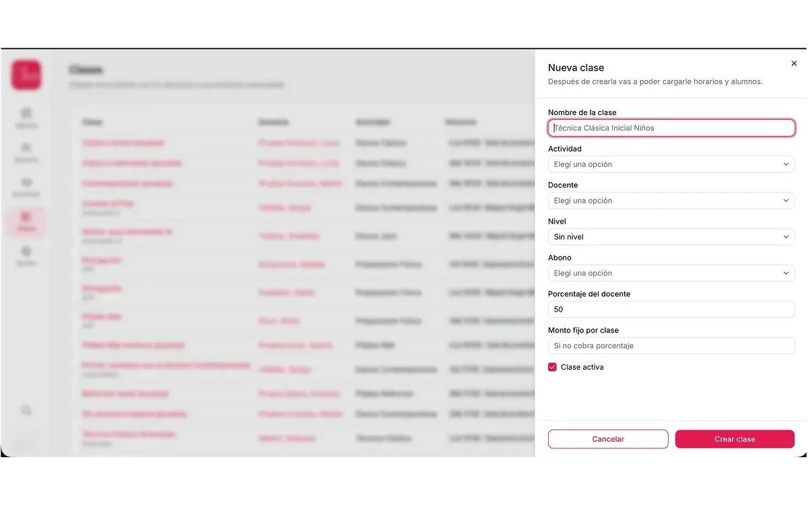

Danza y Pilates · Sistema de gestión
Un estudio de danza que deja atrás su sistema de 2017
Desarrollé Domus, el sistema que reemplazó al viejo programa en Outlook y VBA de un estudio de danza y Pilates: alumnos, clases, agenda con asistencia por sala, horarios fijos, cobro mensual automático con becas y bonificaciones, pagos y roles con auditoría. Hoy todo el estudio trabaja sobre un mismo sistema.
- Next.js
- TypeScript
- PostgreSQL
- Supabase